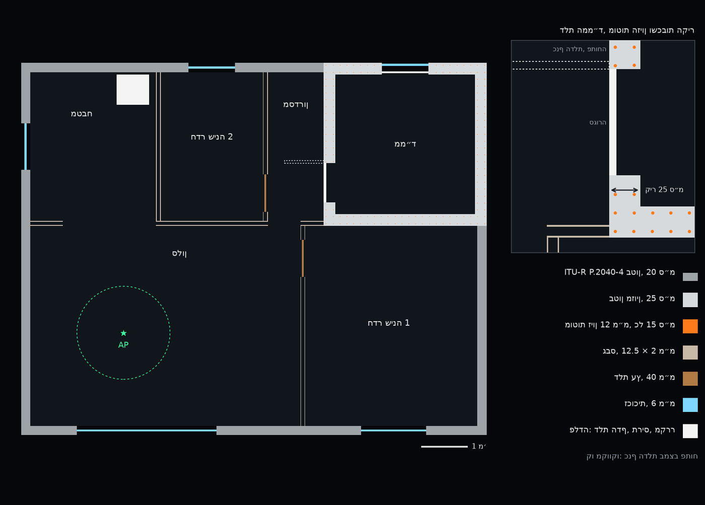
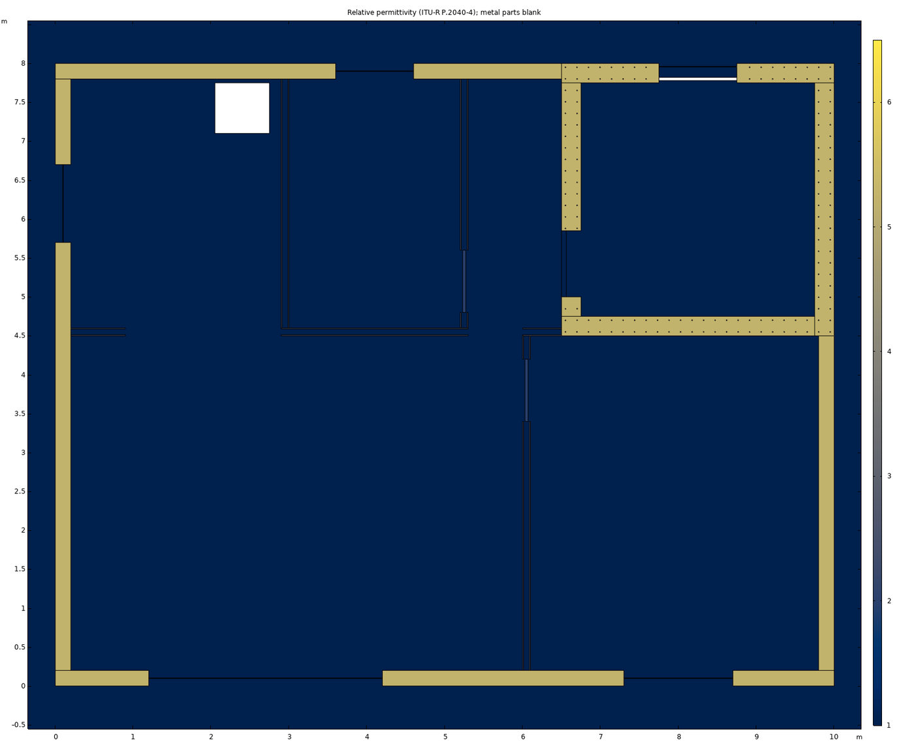
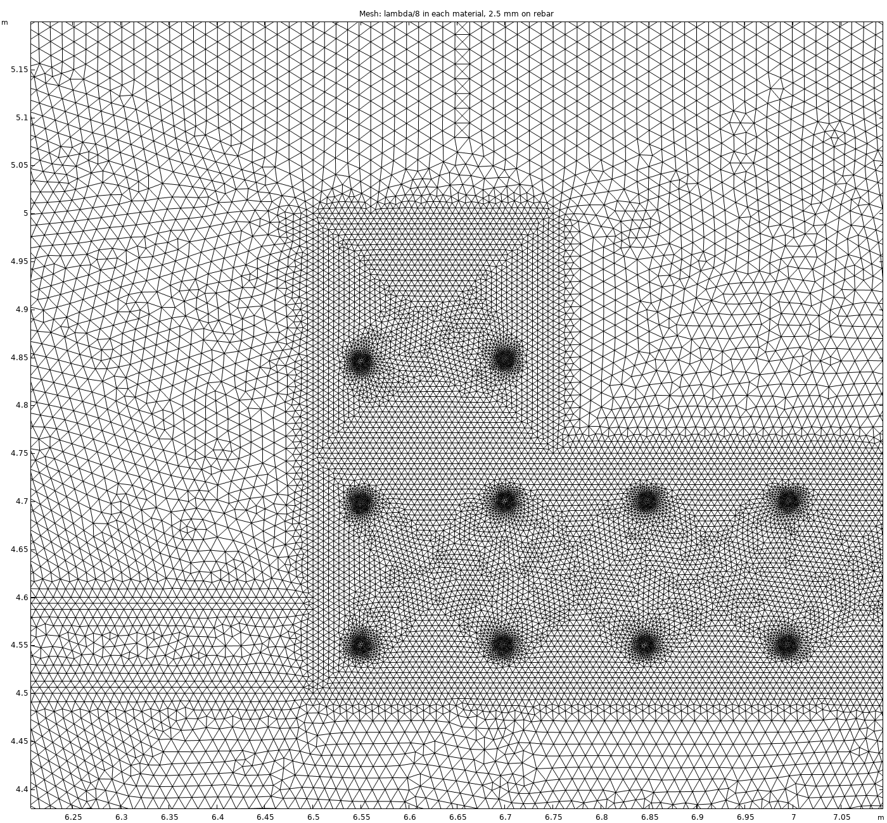
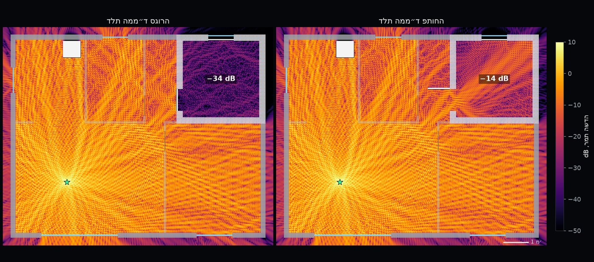
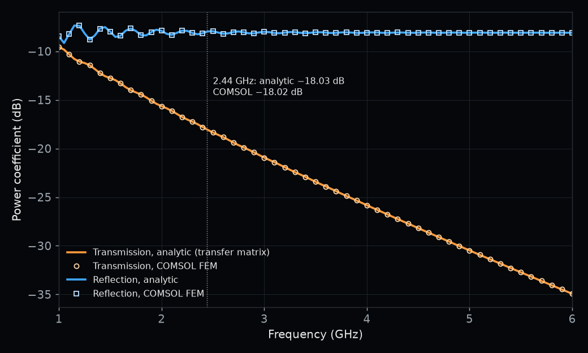

סימולציה אלקטרומגנטית · התפשטות גלים בדירה
קליטת Wi‑Fi בממ״ד: דלת פתוחה מול דלת סגורה
ממ״ד בנוי לעמוד בהדף: קירות בטון מזוין בעובי 25 ס״מ, דלת פלדה ותריס פלדה. אותו מבנה מחליש מאוד גם את אות ה‑Wi-Fi שמגיע מהסלון. בניתי ב‑COMSOL מודל של דירה עם ממ״ד ופתרתי את השדה האלקטרומגנטי בתדר 2.44 GHz בשני מצבים: דלת הממ״ד פתוחה ודלת הממ״ד סגורה.
המודל


המודל הוא חתך אופקי של דירה בגודל 10 × 8 מ׳. קירות החוץ עשויים בטון בעובי 20 ס״מ, עם חלונות זכוכית. קירות הממ״ד עשויים בטון בעובי 25 ס״מ, ובתוכם 148 מוטות זיון אנכיים בקוטר 12 מ״מ, בשתי שכבות ובמרווח של כ־15 ס״מ. דלת ההדף, תריס החלון והמקרר במטבח עשויים פלדה. המחיצות הפנימיות בנויות משני לוחות גבס עם חלל אוויר ביניהם, והדלתות הפנימיות מעץ. נקודת הגישה (AP) נמצאת בסלון.
תכונות החומרים לקוחות מהמלצה ITU-R P.2040-4 של איגוד התקשורת הבין־לאומי, שמגדירה פרמיטיביות ומוליכות כפונקציה של התדר לחומרי בנייה נפוצים. ב־2.44 GHz: לבטון פרמיטיביות יחסית 5.24 ומוליכות 0.0928 S/m; לגבס 2.73 ו־0.0197 S/m; לעץ 1.99 ו־0.0122 S/m; לזכוכית 6.31 ו־0.0119 S/m.
הפתרון נעשה במודול RF של COMSOL, בתחום התדר, עבור הרכיב האנכי של השדה החשמלי. המקור הוא זרם קווי בנקודת הגישה, ושכבות PML סביב הדירה בולעות את הגל היוצא.
גודל האלמנט המרבי הוא שמינית אורך גל בכל חומר: 15.4 מ״מ באוויר ו־6.7 מ״מ בבטון. על היקף כל מוט זיון גודל האלמנט הוא 2.5 מ״מ לכל היותר. הרשת כוללת 1,813,012 משולשים ו־3,588,055 דרגות חופש, וכל מצב דלת נפתר בכ־80 שניות.

דלת סגורה מול דלת פתוחה

12.3 dB
ההפרש בין הסלון לממ״ד ברמה הממוצעת, דלת פתוחה
31.7 dB
אותו הפרש, דלת סגורה
19.4 dB
העלייה ברמה הממוצעת בממ״ד כשפותחים את הדלת
2.44 GHz
תדר הסימולציה, בתחום 2.4 GHz של Wi-Fi
כשהדלת סגורה, האות מגיע לממ״ד דרך הבטון המזוין, ולוח בטון בעובי 25 ס״מ מחליש גל שפוגע בו בניצב ב־18 dB. כשהדלת פתוחה, הפתח הופך לנתיב העיקרי, והגל נכנס דרכו ומתפזר מכנף הדלת וממוטות הזיון. בשאר החדרים, פרט למסדרון, מצב הדלת משנה את הרמה הממוצעת בעד 0.5 dB.
אימות ומגבלות
כדי לבדוק את מידול הבטון ואת כלל הרשת בתוך קיר, פתרתי ב‑COMSOL גם לוח בטון בודד בעובי 25 ס״מ תחת גל מישורי והשוויתי לפתרון האנליטי (מטריצת מעבר): ב־2.44 GHz ההעברה היא 18.02 dB מתחת לגל הפוגע בסימולציה ו־18.03 dB בחישוב, ובתחום 1 עד 6 GHz ההפרש המרבי הוא 0.021 dB.

המודל הוא חתך אופקי דו־ממדי: הקירות, הדלתות ומוטות הזיון אינסופיים לגובה, נקודת הגישה היא מקור קווי, ואין מסלולים דרך הרצפה והתקרה. דלת ההדף מיוצגת כלוח פלדה רציף, בלי מרווחים סביב המשקוף. לכן הרמות המוחלטות וההפרשים בין החדרים הם הערכה של המודל הדו־ממדי, וההצללה, ההנחתה בקירות ובדלת והמעבר דרך הפתחים הם החלק המשמעותי פיזיקלית.